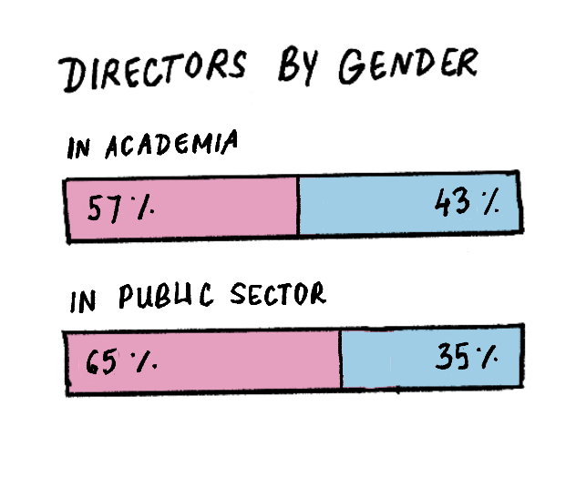
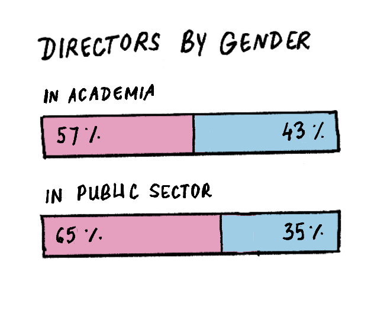

The Gender Wage Gap
According to the estimates of the World Inequality Report 2022, in India, men earn 82% of the labour income, whereas women earn 18% of it.
Consider being a female laborer in rural India. You make 88 rupees lesser than your male counterpart during your paid work hours. The gap between your wages is more than the price of two kilograms of rice that could have fed your family.
This wage difference differs from state to state. For example, Tamil Nadu has the highest wage gap among laborers at 112%, along with Goa at 61% and Kerala. The lowest is in Jharkhand and Gujarat(6%), however the pay rates are much lower.
If salaried work is more your speed, consider being a female office worker in Odisha. According to economist Claudia Goldin, socialization is a main factor of why women choose lower paying salaries and get promoted less. From birth, women are expected as their mothers and generations before them were, to rear children and put their careers on hold for them. Their education and specializations are also not given importance to, especially if a male child is also in the family- who is then expected to bear the burden of providing.
In Odisha, the average salaried man makes 20,666 rupees a month while you, their female counterpart, would only be making 15,722 rupees.
To be more specific, let’s look at libraries. A female librarian with the same level of experience and qualifications as their male coworker is still less likely to be promoted to director, even in a field that prioritizes academia — despite having more female coworkers during their tenure.
 

Though most library directors are women, the percentage of directors who are men exceeds the percentage of librarians who are men. Also, men's salaries tend to be higher than women's, even for the same position.
The topic of the gender-wise pay gap is an extremely complex phenomenon, and this article is certainly not meant to be a complete collection of data and logic to convince anyone that it exists, however from mere observation we can see that on average, across the world, the wage gap clearly exists. Women get paid lesser than men overall, though the rate of this differs from country to country.

It may seem like men overall worker longer hours than women, but the main takeaway here is that men work more paid hours than women. The current overall pay gap number of around 19% does not take into consideration occupation, education, skills, or education. Once that is taken note of, the actual wage gap is reduced to around 4%. This is generally what is considered the “unexplained” pay gap, meaning there is no economic explanation for it — it is chalked up to being purely based on gender discrimination.
Debunking the wage gap?
So it seems like a certain portion of the wage gap is attributed to discrimination, but the rest of it is simply the choice of occupation, right? The fact that women overwhelmingly choose low paying jobs or those with lesser hours, such as nursing, teaching or childcare — while men choose higher paying and more prospective jobs like medicine, law, or engineering - is what most people attribute to the wage gap being debunked.
However, this also comes through because of socialization and the expectations of the social order — plus, we can also see the wage gap persist in these female dominated fields.
It is also worth mentioning that historically, most careers with a female majority become devalued over time. A new study from researchers at Cornell University found that the difference between the occupations and industries in which men and women work has recently become the single largest cause of the gender pay gap, accounting for more than half of it. In fact, another study shows, when women enter fields in greater numbers, pay declines — for the very same jobs that more men were doing before.
Once women start doing a job, “It just doesn’t look like it’s as important to the bottom line or requires as much skill,” said Paula England, a sociology professor at New York University. “Gender bias sneaks into those decisions.”
A striking example is when women in large numbers became designers (wages fell 34 percentage points), housekeepers (wages fell 21 percentage points) and biologists (wages fell 18 percentage points). The reverse was true when a job attracted more men. Computer programming, for instance, used to be a relatively menial role done by women. But when male programmers began to outnumber female ones, the job began paying more and gained prestige.

Coming back to the topic of men working more paid hours, it’s an undisputable fact that women work a much greater amount of unpaid work through their lives, such as housework and childcare outside of their regular working hours.


The idea is not to discourage men from doing housework, but it is undisputable that women do a disproportionately large amount of it. With children in the picture, the concept of the motherhood penalty comes into play. It is here that the graph so widely skews when it comes to womens’ income streams.
The "motherhood penalty" signifies the adverse effects that motherhood can impose on a woman's career, particularly concerning hiring decisions and workplace perceptions. when employers evaluate the candidacy or advancement of women who are mothers, biased assumptions about their commitment, availability, and productivity may come into play.
Mothers may encounter disparities in wages and promotions compared to their childless counterparts, even with similar qualifications and experience. the motherhood penalty can lead to reduced opportunities for career growth and advancement.
In essence, the wage gap is not a simple set of obvious numbers, but instead a complex set of discriminatory systems that take decisions made by women to uplift themselves in their careers and turns it back into the oppressive system that has been developed over time. A major problem here is how our society constructs gender and how we view women and mothers — and realize that there are real systemic biases that are unfairly pinning most of the world’s unpaid labor onto women. It’s clear there needs to be conscious change if we want to better the lives of women both inside and outside the workforce.